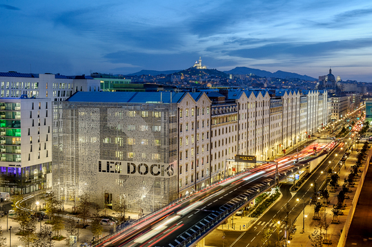

Bienvenue sur la page d'Accueil !
Retrouvez l’agenda des bons plans et événements à ne pas manquer à Marseille et en Provence mis à jour chaque semaine !
Voici les activité à faire à Marseille cette semaine. Céramique, boulangerie, soirée jeux, défis sportifs… Amusez-vous bien !
Toute la semaine
Documents rares
L’exposition Trésors des BU donne accès au public à des documents inédits des bibliothèques universitaires d’Aix-Marseille Université. Ce sont des ouvrages rares habituellement stockés en réserve et inaccessibles. Le plus ancien exemplaire à l’affiche date du XIIIème siècle. Les visites sont libres pour les étudiants et le personnel d’AMU. Pour les autres, des visites guidées sont organisées.
Inscription ici. Du 2 au 19 novembre à la BU du campus Saint-Charles, du 29 novembre au 17 décembre au Cube, site Schuman, Aix-en-Provence.
Nouveau spectacle à la Criée
Du mardi 9 au dimanche 14 novembre, La Criée accueille le spectacle Le Sel, en français, hébreu et arabe surtitré. Cette histoire raconte un voyage, périple d’un hébreu à dos d’âne. Entre faits et légendes, le spectateur fait un bond dans le temps pour retourner aux origines du personnage. La réalisatrice Christelle Harbonn aborde notamment les thèmes des liens et de l’exil.
Du mardi 9 au dimanche 14 novembre.
30 Quai de Rive Neuve, 13007 Marseille.
Programme dense à la Friche
Rendez-vous dans la Tour Panorama de La Friche Belle de Mai pour un après-midi et une soirée enrichissantes. Le lieu accueille le vernissage de cinq expositions le vendredi 12 novembre, de 17 h à 22 h. Galeries, portes ouvertes, ateliers d’artistes, performances et spectacles vivants vous attendent. Découvrez par exemple l’exposition Bleu, Blanc, Rouge : Quand l’art travaille l’école. Jusqu’au 2 janvier prochain, les artistes Florence Lloret et Arnaud Théval croisent leur regard avec celui du philosophe Alain Kerlan.
41 rue Jobin, 13003 Marseille.
La Fabulerie vous accueille
Profitez du riche programme proposé par la Fabulerie. La Sérendipe vous propose un atelier d’écriture le lundi 8 novembre de 18 h à 20 h en explorant le thème des forêts intérieures dans tous ses domaines (se nourrir, se balader, imaginer). L’inventarium des enfants les accueille le mercredi 10 novembre de 14 h à 16 h pour explorer le vivant grâce à des ateliers de création numérique. Ce même jour de 18 h à 20 h, un atelier de concertation créative vous est proposé pour réfléchir aux causes et conséquences du réchauffement climatique sur le quartier des Canourgues, à Salon-de-Provence. À 19 h 30, assistez à une projection du mouvement international de vidéastes Kino Fada, sur le thème “Tête en l’air“.
La Fabulerie, 10 boulevard Garibaldi, 13001 Marseille.
Exposition aux Docks Village
Il reste peu de temps, jusqu’au 21 novembre prochain, pour admirer les expositions Entre deux mondes et Wall, Street & Zic aux Docks Village. Dans l’une, les peintres Frago et Sauzereau affichent leur passion à travers leurs voyages, leurs parcours et leurs rencontres. Dans l’autre, des artistes photographes invitent à réfléchir à notre propre vision du monde. Le surréalisme est également à l’affiche.
Du lundi au vendredi de 10 h à 19 h, et le week-end de 10 h à 19 h pour Wall, Street & Zic.
Docks village, 10 Pl. de la Joliette, 13002 Marseille
